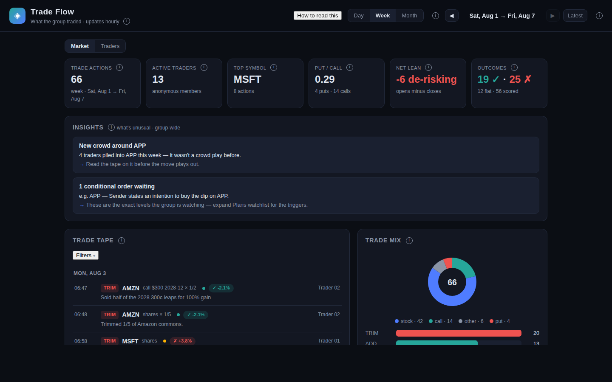
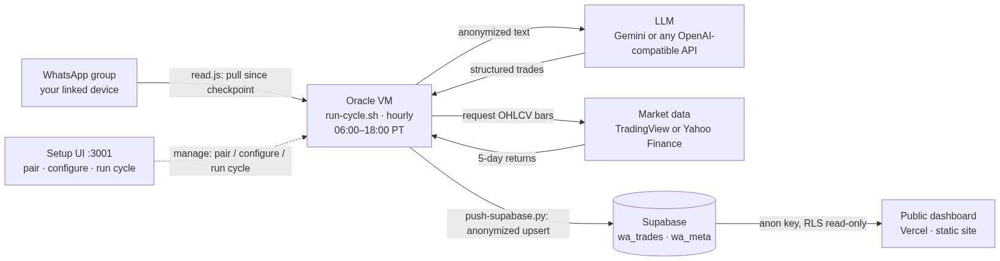

Ideas get buried in chat.
Trade ideas are posted in a group chat and scroll out of view. Weeks later it's hard to find who suggested what, or whether the idea worked.
TradeFlow turns a WhatsApp group into a structured trade tape — what the crowd is trading, who's active, and how those calls played out. Runs on your hardware. Read-only: it watches and scores, never trades.
Trade ideas are posted in a group chat and scroll out of view. Weeks later it's hard to find who suggested what, or whether the idea worked.
For groups that share stock, options, or futures ideas in chat and want a record of what was suggested and how it turned out.
It lists what the group traded, who posted, and how each idea performed five trading days later.
Not a live monitor. Data refreshes hourly; it's for review, not for reacting in real time.
Not a trading bot. Read-only, no broker connection, places no trades.
Not financial advice. It reports what happened; it doesn't recommend what to do.
One chronological tape of actual trades, minus the questions and chatter around them. Filter by symbol, instrument, action, outcome, or trader.
Whether the group is opening or closing, put/call balance, the busiest symbols, and names several members are piling into.
Every call gets a five-trading-day direction check: favorable, unfavorable, or flat. Stated targets are tracked separately. Options are scored on the stock's direction, not the contract's profit.
The Traders view compares activity, active days, favorite symbols, and scored outcomes. Nobody's identity is exposed, and small samples stay labeled.
Each action is scored against real daily market data — TradingView or Yahoo Finance, your pick. The scores show up on per-trader scorecards and in crowd insights.
Raw chat and WhatsApp identities never reach the dashboard. Each message goes to the language model you pick for extraction, and only structured, pseudonymized trade records get stored.
Below is Trading Floor, a dashboard built with TradeFlow, running on live data from a real trading group. Same trade tape, outcome badges, crowd insights, and per-trader cards — fully anonymized.
No sign-up, no keys — it's a static site reading live data, refreshed hourly. Your own deployment reads from your database.

Like what you see? Point it at your own group — the Get started tab has the checklist and the setup prompt.
Get started →The repo has the reader, parser, outcome scorer, setup UI, database schema, and dashboard. It runs on your own hardware; a free Oracle Cloud VM is enough.
Connect as a linked device, fetch messages since the last checkpoint, disconnect. Hourly 8:30am–5pm ET, plus a midnight run.
Split buys, sells, plans, options, and quoted context into structured trade actions.
Check five-trading-day direction against market data.
Review flow, outcomes, clusters, and trader activity on the dashboard.
Connects as a linked device, pulls messages since the last checkpoint, and disconnects. No permanent session, no spare phone.
Turns chat messages into structured trade records: symbol, action, instrument, strike, expiry, quoted context. Any OpenAI-compatible LLM works.
Daily bars for the five-day outcome scoring, round-trip detection, and target checks. Yahoo Finance (free, no key) is a drop-in alternative.
Postgres stores the pseudonymized trade records and sync metadata. The dashboard reads it live; row-level security keeps writes server-side. Any PostgREST-compatible database works.
Node drives the WhatsApp reader and setup UI; Python handles extraction, scoring, and the database push. It all runs on your VM — one shell script per cycle, fired hourly by a systemd timer.
The dashboard is a dependency-free static site on Vercel; the pipeline runs on an Oracle Cloud Always Free VM. Any Ubuntu VM works as the host.

Gather the checklist, then hand the setup prompt to your AI agent. Every step matches the installer and setup UI.
dashboard/ and it deploys on every push. Point dashboard/supabase-config.js at your Supabase project first.The agent does the deploying and installing. Three steps need you: typing the pairing code into WhatsApp on your phone, pasting your API keys, and running the Supabase schema once. It all happens in the setup UI, section by section:
How to know it worked:
wa_trades table.sudo systemctl status wa-trade-bot-cycle.timer — hourly, 08:30–17:00 ET plus a midnight run.No. It watches exactly one group chat — the trading group you name in the setup UI — and only group messages. Your 1:1 chats are never touched.
No. The reader pairs as a linked device on your existing WhatsApp account with a one-time code, then disconnects after every hourly pull.
Never. It's read-only analytics — it watches, structures, and scores. There is no brokerage connection and no order path anywhere in the code.
$0 a month on free tiers: an Oracle Cloud Always Free VM, the Gemini free tier, Supabase free tier, and Vercel free tier. Every layer is swappable if you'd rather use your own providers.
Pairing is a round trip: the setup UI shows a code, you type it into WhatsApp on your phone, and WhatsApp confirms back to the VM. The link only counts once the UI reports wa_paired: true. Type the code in right away — codes expire within minutes — and wait for that confirmation before moving on. If it keeps failing, the VM is holding a stale half-paired session: click "Get a fresh code" in the setup UI, which wipes it and starts clean.
The page at http://<VM-IP>:3001/setup.html won't load. Oracle blocks all ports by default — the subnet's security list needs a TCP ingress rule for port 3001 (source 0.0.0.0/0). Add it in the Oracle console under Networking → Security Lists; the checklist above has the exact rule.
Always Free capacity in a region comes and goes — we hit this in us-sanjose-1 for both free shapes. Retry, or try the other shape. What unblocked us: upgrading the tenancy to Pay As You Go (card on file, still free-tier eligible) with a budget alert as a safety net.
Two usual causes. First, a fresh linked device takes up to a minute to sync its chat list — the reader polls and waits, so give it a moment and run the cycle again. Second, the group filter: the reader only looks at the group named in "WhatsApp group to watch" in the setup UI (case-insensitive substring match). If that doesn't match the group's actual name in WhatsApp, it finds nothing.
Symptom: pairing codes never appear, or reads die instantly. The chromium snap's launcher wrapper refuses to run inside a systemd service — the browser starts fine over SSH but never from the timer or setup UI. The fix is PUPPETEER_EXECUTABLE_PATH=/snap/chromium/current/usr/lib/chromium-browser/chrome (the real binary). The installer sets this already; only hand-rolled setups need it done manually.
One bad batch never blocks the rest: the parser retries failed batches smaller, and messages it can't parse are marked and skipped. The usual cause is the Gemini free tier's rate limit. Easiest fixes first: add a backup Gemini key in the setup UI (it fails over automatically when the primary hits quota), wait for the quota to reset, or point the setup UI at any OpenAI-compatible model instead.
Not an error — the timer only runs 08:30–17:00 America/New_York plus a midnight run by design. For an immediate run, "Run a cycle now" in the setup UI bypasses the time gate.
Check Status first. If "Last pull" is old, the pipeline isn't running — check the timer and the cycle log. If the tape is fresh but outcome badges are missing, that's the market-data source: scoring failures never block new trades, so an expired TradingView token or an unreachable Yahoo just leaves scores blank. Reconnect it in §3 of the setup UI.
One free VM, your existing WhatsApp, one API key. Hand the setup prompt to your AI agent.
The pipeline handles messy chat — but a few group habits make the tape cleaner and the scores more meaningful.
ACTION SYMBOL details — e.g. ADD AMZN $300 call or EXIT TSLA shares. The parser handles free text, but consistent posts extract reliably. Pin the format to the group.PLAN AMZN target 300. The dashboard checks whether stated targets get hit — but a plan without a target can't be scored.A side project — feedback, feature requests, and bug reports welcome.